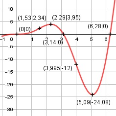

Aufgabe 177 f(x) = x2 * sin x x im Bogenmaß Produktregel erste Ableitung: u = x2, u' = 2x v = sin x, v' = cos x f'(x) = 2x * sin x + cos x * x2 Summen- und 2mal-Produktregel zweite Ableitung: u = 2x, u' = 2 v = sin x, v' = cos x f''1 = 2 * sin x + cos x * 2x u = x2, u' = 2x v = cos x, v' = -sin x f''2 = 2x * cos x + (-sin x) * x2 f''(x) = 2*sin x + 2x*cos x + 2x*cos x - x2*sin x f''(x) = 2 * sin x + 4x * cos x - x2 * sin x Summen- und 2mal-Produktregel dritte Ableitung: u = - x2, u' = -2x v = sin x, v' = cos x f'''1 = -2x * sin x + cos x * (-x2) u = 4x, u' = 4 v = cos x, v' = -sin x f'''2 = 4 * cos x + (-sin x) * 4x f'''(x) = 2*cos x + 4*cos x - 4x*sin x - - 4*sin x + (-2x)*sin x + cos x*(-x2) f'''(x) = 6 * cos x - 6x * sin x - x2 * cos x Definitionsbereich: 0 ≤ x ≤ 2π Wertebereich: -24,08 ≤ f(x) ≤ 3,95 (siehe Extrempunkte) Symmetrie zur y-Achse bzw. zum Punkt (0|0): f(-x) = (-x)2 * sin (-x) = x2 * -sin x ≠ f(x) --> keine Achsensymmetrie -f(-x) = -(x2 * -sin x) = x2 * sin x = f(x) --> Punktsymmetrie Nullstellen: f(x) = 0 x2 * sin x = 0 |-2 x2 = 0 x1,2 = 0 N1(0|0) sin x = 0 x2 = π = 3,14 ≙ 180° N2(3,14|0) x3 = 2π = 6,28 ≙ 360° N3(6,28|0) Schnittpunkt mit der y-Achse: x = 0 f(0) = 02 * sin 0 = 0 Sy(0|0) Extrempunkte: f'(x) = 0 2x * sin x + x2 * cos x = 0 Wertetabelle: x 0 1 2 3 4 f'(x) 0 1,4 2 -8,1 -16,5 x 5 6 2π f'(x) -2,5 31,2 19,7 Nullstelle x1 = 0 Vorzeichenwechsel zwischen 2 und 3, gewählt Nullstelle x(02) = 2,2 Vorzeichenwechsel zwischen 5 und 6, gewählt Nullstelle x(03) = 5,07 x1 = 0, f(0) = 0 f''(0) = 2*sin 0 + 4*0 * cos 0 - 02*sin 0 = 0 f'''(0) = 6*cos 0 - 6*0 * sin 0 - 02*cos 0 ≠ 0 --> Wendepunkt(0|0) Näherungsverfahren von Newton: f(x0) x2 = x0 - ------- f'(x0) 2 * 2,2 * sin 2,2 + 2,22 * cos 2,2 x2 = 2,2 - -------------------------------------- 2*sin 2,2+4*2,2*cos 2,2-2,22*sin 2,2 x2 = 2,2 - (-0,09) = 2,29 f(2,29) = 2,292 * sin 2,29 = 3,95 x3 = 5,07 - 2 * 5,07 * sin 5,07 - ------------------------------------------ + 2*sin 5,07+4*5,07*cos 5,07-5,072*sin 5,07 5,072 * cos 5,07 + ------------------------------------------ 2*sin 5,07+4*5,07*cos 5,07-5,072*sin 5,07 x3 = 5,07 - (-0,02) = 5,09 f(5,09) = 5,092 * sin 5,09 = -24,08 f''(2,29) = 2 * sin 2,29 + 4 * 2,29 * cos 2,29 - - 2,292 * sin 2,29 < 0 --> Hochpunkt(2,29|3,95) f''(5,09) = 2 * sin 5,09 + 4 * 5,09 * cos 5,09 - - 5,092 * sin 5,09 > 0 --> Tiefpunkt(5,09|-24,08) Wendepunkte: f''(x) = 0 2 * sin x + 4 * x * cos x - x2 * sin x = 0 Wertetabelle: x 0 1 2 3 4 f''(x) 0 3 -5,15 -12,9 0,1 x 5 6 2π f''(x) 27,7 32,5 25,1 Wendepunkt x1 = 0 siehe oben. Vorzeichenwechsel zwischen 1 und 2, gewählt Nullstelle x(02) = 1,4 Vorzeichenwechsel zwischen 3 und 4, gewählt Nullstelle x(03) = 4 Näherungsverfahren von Newton: f(x0) x1 = x0 - ------- f'(x0) x2 = 1,4 - 2*sin 1,4 + 4*1,4 * cos 1,4 - 1,42*sin 1,4 - -------------------------------------------- = 6*cos 1,4 - 6*1,4 * sin 1,4 - 1,42*cos 1,4 x2 = 1,4 -(-0,13) = 1,53 f(1,53) = 1,532 * sin 1,53 = 2,34 2 * sin 4 + 4 * 4 * cos 4 - 42 * sin 4 x3 = 4 - ---------------------------------------- 6 * cos 4 - 6 * 4 * sin 4 - 42 * cos 4 x3 = 4 - 0,005 = 3,995 f(3,995) = 3,9952 * sin 3,995 = -12 f'''(1,53) = 6 * cos 1,53 - 6 * 1,53 * sin 1,53 - - 1,532 * cos 1,53 ≠ 0 --> WP2(1,53|2,34) f'''(3,995) = 6 * cos 3,995 - 6 * 3,995 * sin 3,995 - - 3,9952 * cos 3,995 ≠ 0 --> WP3(3,995|-12) Graph:
